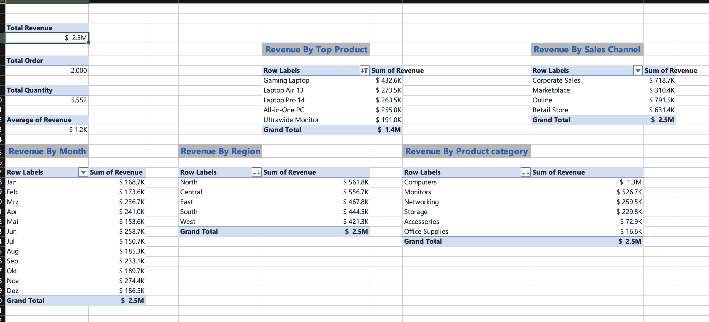

Where does the revenue come from?
I turned 2,000 raw sales orders into an interactive Excel dashboard that shows revenue, orders and performance by month, region, product and sales channel.

Final Sales Dashboard (screenshot of the interactive Excel version). The slicers filter by region, sales channel, customer type and product category.
The challenge
A manager wants to review sales performance quickly: how much revenue came in, how many orders, which regions, products and channels perform best, and how sales change through the year.
The data
2,000 order records from January to December 2026 with 12 columns: Order ID, Date, Region, Sales Channel, Customer Type, Product Category, Product, Salesperson, Quantity, Unit Price, Discount and Revenue.
What I did in Excel
- Checked the data first: confirmed there were no blank headers, that dates were recognised as dates, that Revenue and Quantity were numbers, and that category names were spelled consistently with no duplicate orders.
- Planned the dashboard: matched each business question to a dashboard element and the column needed to answer it.
- Built 9 PivotTables: four for the KPIs (total revenue, total orders, total quantity sold, average order value) and five for the charts (revenue by month, region, product category, sales channel and top 5 products).
- Created the charts: a line chart for the monthly trend, bar charts for region, product category and top products, and a doughnut chart for sales channel.
- Added slicers for Region, Sales Channel, Customer Type and Product Category, connected to every pivot so the whole dashboard updates with one click.
Behind the dashboard: pivot tables

Each KPI card and chart on the dashboard is built from one of these pivot tables.
Key findings
- Total revenue was $2.45M from 2,000 orders and 5,552 units, an average order value of about $1,226.
- Computers drive the business: they bring in 55% of revenue ($1.35M) from only 338 orders. Accessories and office supplies make up 749 orders but just 3.7% of revenue.
- The top 5 products (led by the Gaming Laptop at $433K) generate about 58% of all revenue.
- Online is the biggest channel at 32% of revenue. Corporate Sales comes second at 29% with only 333 orders, because the average corporate order is about $2,158, the highest of any channel.
- Marketplace is the weakest channel at 13% of revenue, with the lowest average order (about $839).
- North and Central lead the regions at about 23% each, and West is lowest at 17%.
- Returning customers account for 69% of revenue.
- Sales peak in November ($274K) and dip in July ($151K) and May ($154K).
Recommendation
Protect and promote the computer range, since a small number of high-value orders drives most of the revenue. Grow corporate sales, where each order is worth the most, and review the marketplace channel, which brings in many small orders. Plan stock and promotions around the November peak, and look for ways to lift the mid-year dip.
Tools used
Excel, PivotTables, PivotCharts, Slicers, Dashboard design.